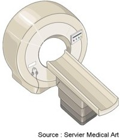

Bienvenue Sur Medical Education
L'imagerie par resonance magnetique : IRM
DefinitionL'imagerie par resonance magnetique ou IRM est une technique d'imagerie qui est basee sur la resonance magnetique des atomes d'hydrogenes contenus dans l'eau des cellules de l'organisme sous l'action de certaines ondes de radio frequence.
Elle permet l'examen des differents organes en coupes dans trois plans.
L'examen peut necessite parfois l'injection d'un produit de contraste, le gadolinium (substance paramagnetique).

Les types d'IRM
IRM abdomino-pelvien
Principe
- Permet de visualiser les structures pelviennes (uterus, ovaires, vessie prostate, tube digestif, ligaments, muscles et ganglions) et les elements vasculaires (arteres et veines).
- Preciser un diagnostic, apres une echographie et un scanner.
- Evaluer l'extension des tumeurs pelviennes (rectum, uterus, ovaire, prostate …).
- Surveillance apres un traitement chirurgical ou par radiotherapie.
IRM cardiaque
Principe
- Permet de visualiser les structures cardiaques (myocarde, pericarde, …) et les gros vaisseaux (aorte, veine cave, arteres et veines pulmonaires).
- Faire un bilan precis des insuffisances cardiaques (apres une radiographie conventionnelle et une echographie) et des cardiopathies congenitales, des pericardites, des tumeurs cardiaques,…
- Bilan de reference avant une intervention chirurgicale de certaines maladies du cœur.
IRM cerebrale
Principe
- Permet de visualiser les deux parties du cerveau, superficielle et profonde, ainsi que les cavites intra-cerebrales avec leur contenu (liquide cephalo-rachidien), et la vascularisation veineuse et arterielle du cerveau.
- Rechercher la localisation et la nature des anomalies du cerveau ou de ses vaisseaux, a l'origine de symptemes neurologiques permanents ou transitoires.
- Explorer une anomalie detectee au scanner cerebral.
IRM de la thyroede
Principe
- Permet de visualiser la glande thyroedienne.
- Etudier la thyroede devant l'existence d'anomalies biologiques ou hormonales faisant suspecter un dysfonctionnement thyroedien.
IRM du rachis
Principe
- Permet de visualiser les structures vertebrales et paravertebrales rachidiennes (vertebre, disque intervertebral, ligaments, muscles) et les elements du systeme nerveux qu'elles contiennent (moelle epiniere et racines nerveuses).
- Rechercher des anomalies de la moelle et des vertebres devant des signes neurologiques particulierement evocateurs.
IRM hepatique
Principe
- Permet de visualiser l'anatomie et la vascularisation du foie.
- Preciser la nature de certaines anomalies du foie, detectees a l'echographie ou au scanner.
IRM hypophysaire
Principe
- Permet de visualiser l'hypophyse.
- Etudier l'hypophyse devant l'existence d'anomalies biologiques ou hormonales faisant suspecter un dysfonctionnement de l'hypophyse, le plus souvent a la presence d'un adenome.
IRM mammaire
Principe
- Permet de visualiser les glandes mammaires.
- Completer et preciser l'exploration de certaines anomalies du sein detectees a la mammographie. Ce n'est pas un examen de depistage.
La preparation a l'examen
- Oter tout objet metallique : bouton, barrettes de cheveux, bijoux, piereings, montre, clefs, cartes a bande magnetique, telephone portable.
- Information du patient :
- Duree de l'examen : 45 minutes.
- Examen impressionnant :
- Lit se deplaeant dans un arceau. Attention si patient claustrophobe, prevoir une premedication.
- Inconfort lie a la necessite de rester parfaitement immobile en position allongee sur le dos.
- Bruyant.
- Communication avec les soignants par des micros.
- Examen non douloureux, mais sensation de chaleur lors de l'injection du produit de contraste.